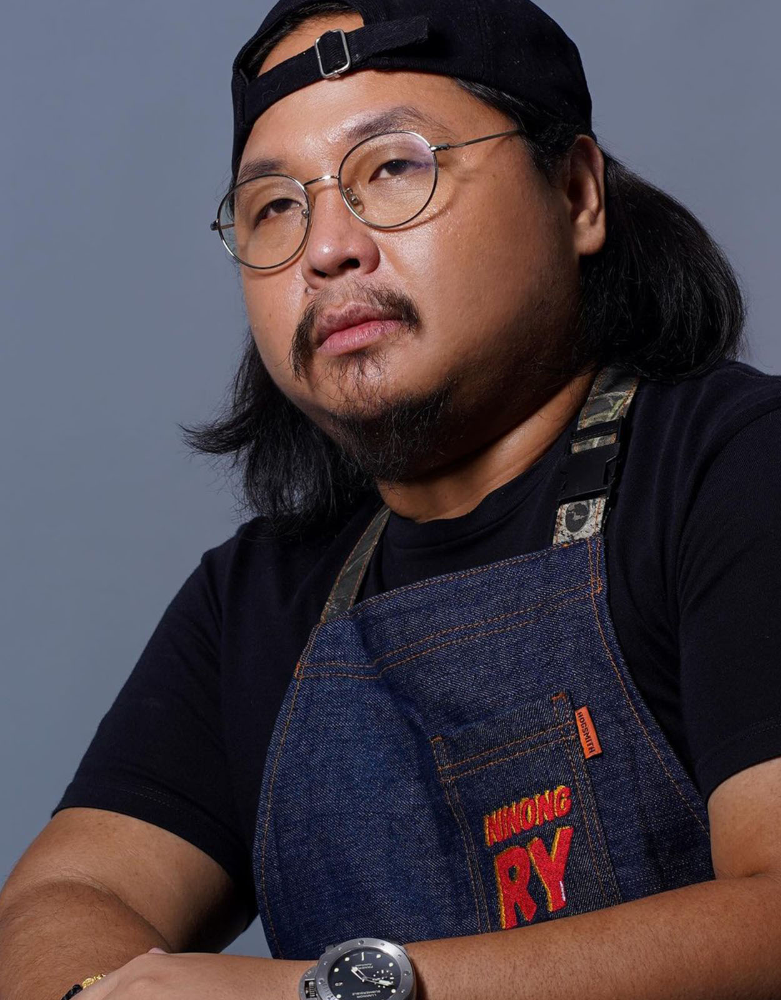

Ninong Ry: My Go-to Youtuber when feeling down

Yours Truly, Magaling magluto at makulet na NINONG RY!
Ninong Ry, also known as Ryan Morales Reyes, is a filipino chef and a social media personality. He rose to fame during the pandemic through his Youtube and Facebook cooking videos, which contain easy recipes to follow and also his humorous ways of showcasing it.
From different ways of cooking adobos, from 3-way cooking videos, continental cooking videos and a lot more of fun stuff that really brightens up your day.